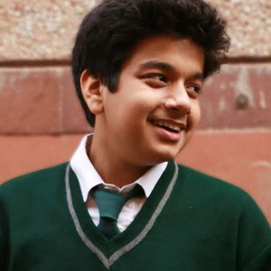

Hi! My name is Rahul!
I am an Economics Major at the Symbiosis School of Economics(SIU,Pune). One of the highest rated institutions for Economics in India.
I am also a freelance visual artist specialising in Vectors and Illustrations.
I am a visual artist with over 4 years of experience in Photoshop and Illustrations. I specialise in illustrations and mass reach posters and other mediums.
During my experience, I have served as the secretary and the Acting Vice President of the computer club between 2017-18 and later as the head of the digital imaging department between 2018-19 while as serving as the president
of the student council. I also recieved the Vice Chairperson's award for literary activites for the 2017-18 for heading the Yearbook and ensuring smooth execution. My complete resume can be found
here
I also code in
Node.JS specialising in Express EJS and mongoDB and I am currently learn the MERN Stack to execute full stsck websites organically. My prokects and tests can be found on my github however clients who wish
privacy remain as private repositories!
During my free time I attempt to read various books. I am currently reading
12 rules of Life by Professor Jordan Brent Peterson and many more. I also listen to various genres of music which can be found on my
spotify.
My current machine is a
2017 i5 Macbook Air with 8GB of ram. While relatively underpowered, it is perfect for my workload and my mobile lifestyle. All my projects are ideated and made on this machine. I also own a
OnePlus 6T which is ridiculously over powered and due to my inability of using my phone for anything more than
Reddit I can't seem to overpower ever.
Due to my intensive Course and other activites I am unable to find time to redecorate my website, however I believe that actions speak louder than words please consider heading to my work to know more.
I am also a die hard fan of Formula 1. If you are here to read my opinions on the current season please head to my blog at
here. The blog is a work in progress and will be completed soon!